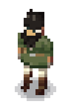
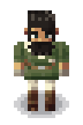
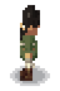
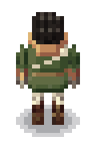
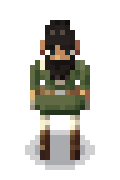
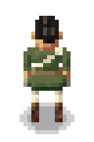
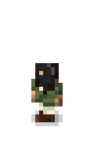
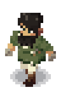

Dwarves
Orvessa's dwarves: a short, broad, long-lived people of mountain and mine, the oldest delvers in Varkesh and the backbone of the Empire.
Orvessa's dwarves: a short, broad, long-lived people of mountain and mine, the oldest delvers in Varkesh and the backbone of the Empire. They are proud, practical and stubborn, and they were the first to put a pistol beside an axe and call it tradition. Dwarves reckon their family lines by which hall or mine their grandparents held. They say they were the first people Varnhalt taught to work iron, and they have never forgiven the world for forgetting it. Their home is the Dwarves' Mountain, which is not a capital: Varr rules them as it rules everyone.
The three kindreds
As in old songs of the mountains, the Dwarves are one people of three kindreds. The player chooses a kindred when creating a Dwarf; it changes the look and gives a small bonus.
| Kindred | Home | Character | Look | Small bonus (placeholder) |
|---|---|---|---|---|
| The Mountain-folk | The Dwarves' Mountain, and Varr | The oldest kindred: halls, forges, treasure-vaults. Proud and bound by tradition; they serve the Empire and never forget they are older than it. Most Dwarves in Varr, on the rails and in the shipyards are Mountain-folk | Broad, braided beards with metal rings, forge-scarred hands | Smithing skill bonus |
| The Highland Clans | The Cragholds | Free clans of the terraces and snow peaks who never bowed to the Emperor. Harder and wilder, quick to fight and slow to forgive. They scorn the Mountain-folk for having "sold themselves to Varr" | Wind-burned skin, clan tattoos, fur and plaid | Cold resistance |
| The Deep-delvers | Beneath Deepway | The kindred who once dug towards the Deep and sealed its gates behind them. Pale, quiet rune-masters, distrusted by both other kindreds for what they may have seen below | Pale skin and eyes, rune-marks in the beard | Better sight in darkness |
The bonuses are placeholders for balancing.
Classes
Class limits per race: TBD.
Gallery















